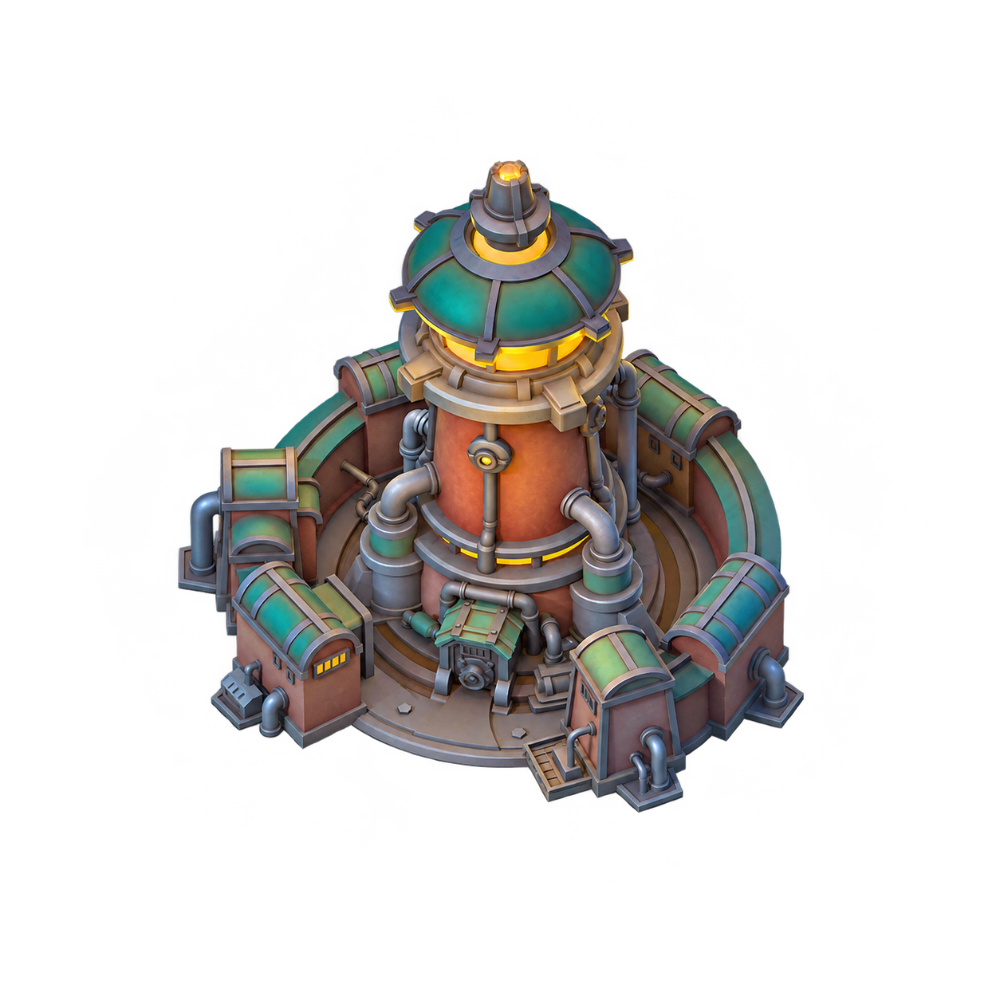

DARK WAR: SURVIVAL
BGB Strategy Planner.
Plan your BGB strategy for Dark War: Survival.
How to use
- Mouse Drag the map or hold Space while dragging. Hold Ctrl or ⌘ and scroll to zoom.
- Touch Drag with two fingers, or hold Space and drag with one finger, to move the map. Pinch to zoom.
- Move a tower Select a tower, choose a destination, then press the check button to move.
- Rename a tower Double-click or double-tap a tower to rename it.
- Save a layout With Play off, move a tower and select a time button to save the positions.
- Play a saved layout Turn on Play and select a time button to move the towers to their saved positions.
- Reset Press Reset to return towers to their starting positions, delete all saved layouts, and turn off Play.
You can’t move to this location.
Move a tower before saving.
